Outdoor Art Kit
Art for an outdoor sword lesson and the countryside around it, bought for 70 generations. It's all placeable in LDtk now. The yard below is a picture built from that art; the game can't draw this ground yet.
Marks and notes save as you go. An unmarked item stays as it is.
The yard in bought art
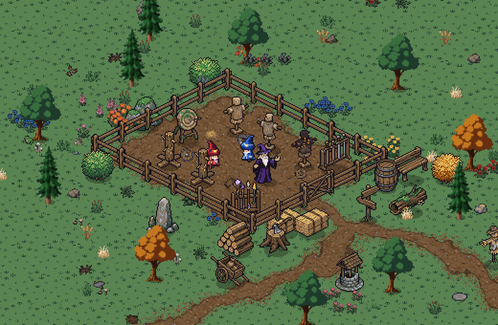
True isometric, with the painted ground. The small things are the scatter sheet at half size.
What came back
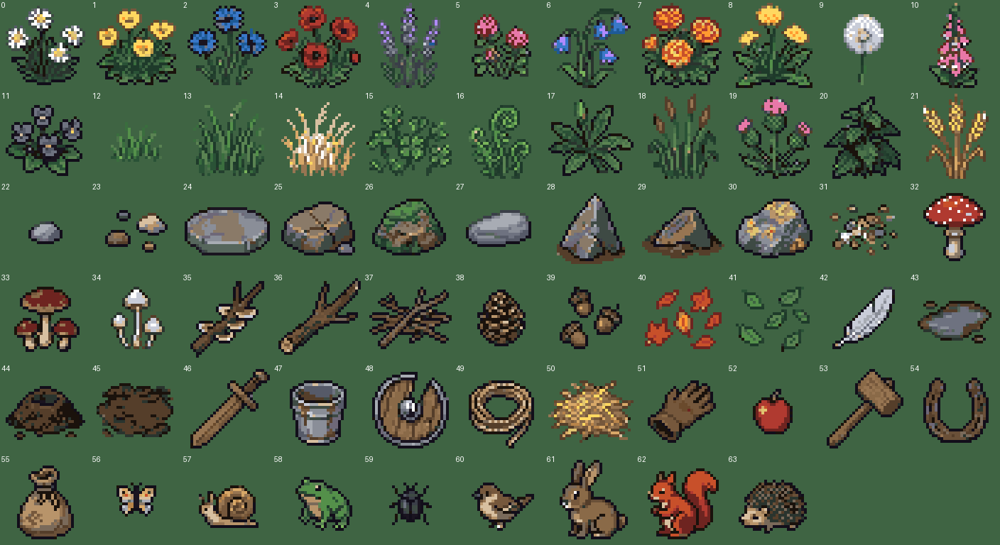
Small scatter sheet, 64 objects, at 4× before halving.
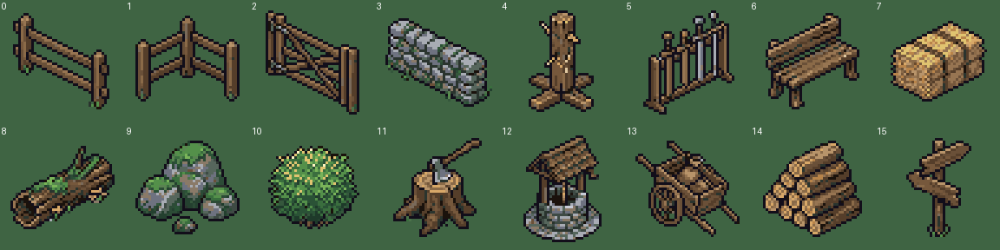
Yard and countryside sheet, 16 objects.
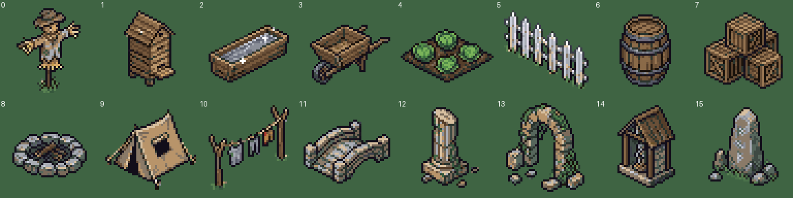
Rural life sheet, 16 objects.
The ground, compared
The same idea in each set. Painted ground beat the isometric tiles: the corner tiles show their diamond grid, and the path pieces keep paths straight on a raised slab. Neither was given our palette, so their neon green is partly fixable, but the grid isn't.
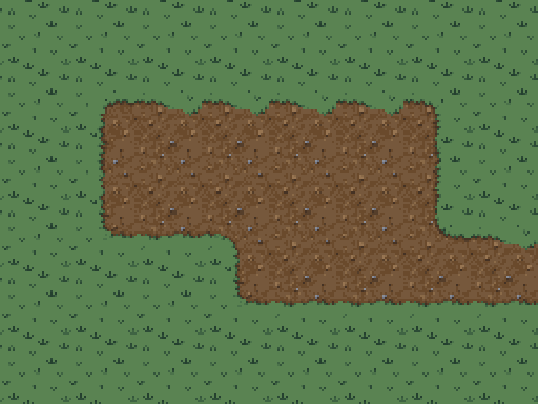
Pro set: in our palette, richest. The tufts repeat.
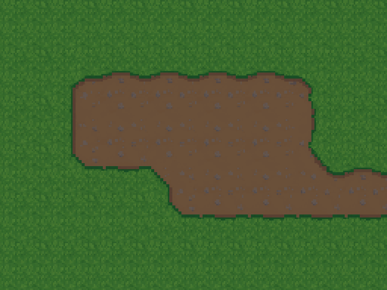
Standard set: plainer, calmer.
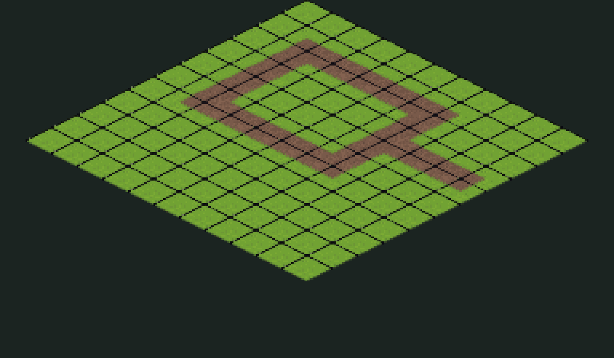
Isometric corner tiles.
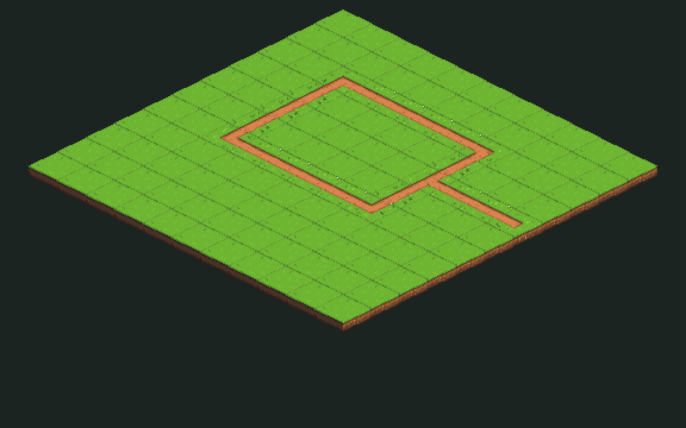
Isometric path pieces.
Before: the free mock
The first version, for comparison. Its grass, dirt, fence, trees and flowers are developer art, and it shows the terrain map working under both cameras.
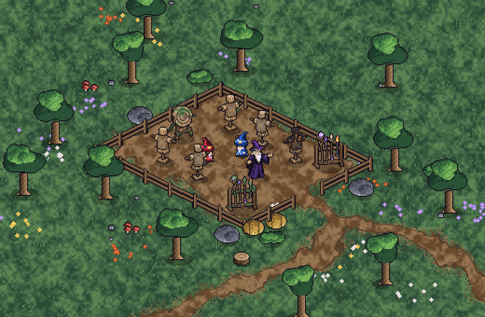
True isometric, the camera you chose. It isn't built yet, so this is a picture, not the game.
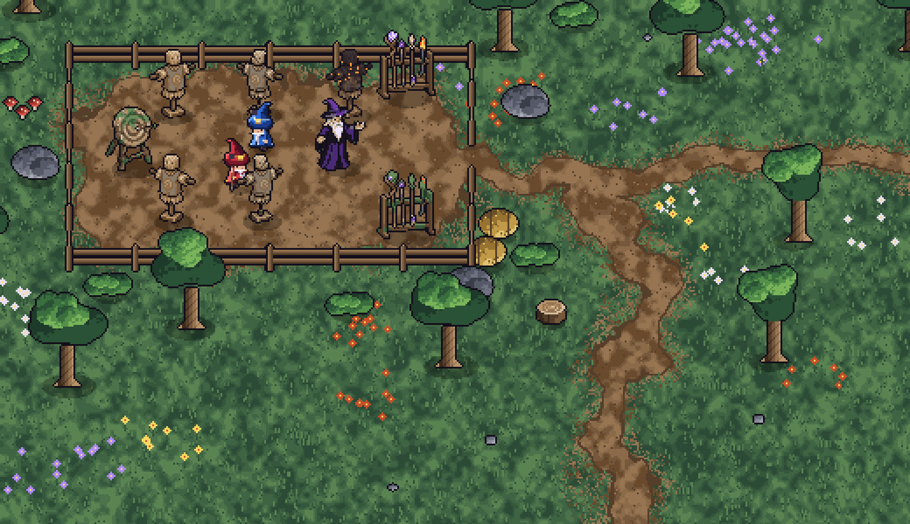
The same terrain map under today's camera. The ground needed no new art to change view.
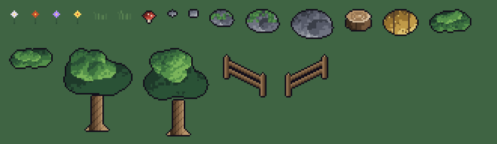
All the developer art at 3×. It's meant to be replaced.
What was bought
The prompts as sent. Mark each: Keep it, Redo it, or Cut it. A note can name single items to redo.
Free variants, already made
Local edits of props we already own, so they cost nothing. They're in the asset registry, ready to place.
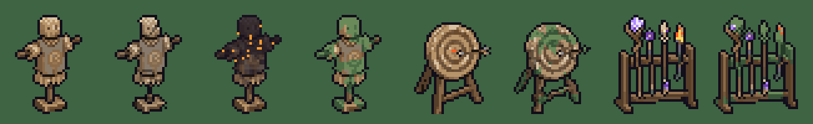
Left to right: dummy, worn, scorched, mossy; target, weathered; rack, mossy.
Questions
An empty box means my pick stands.